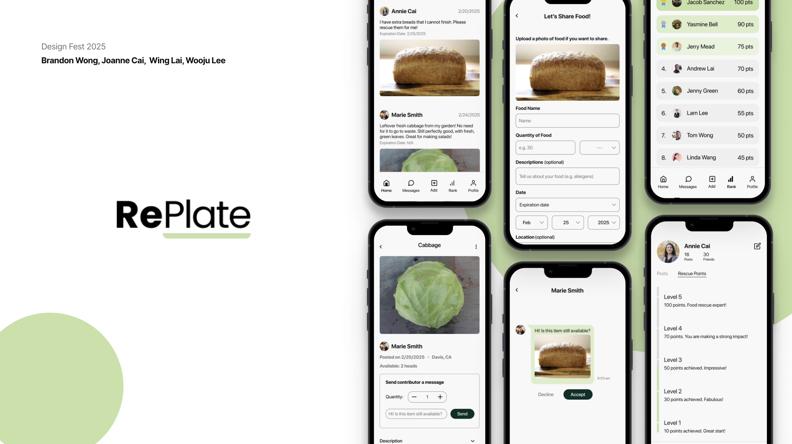
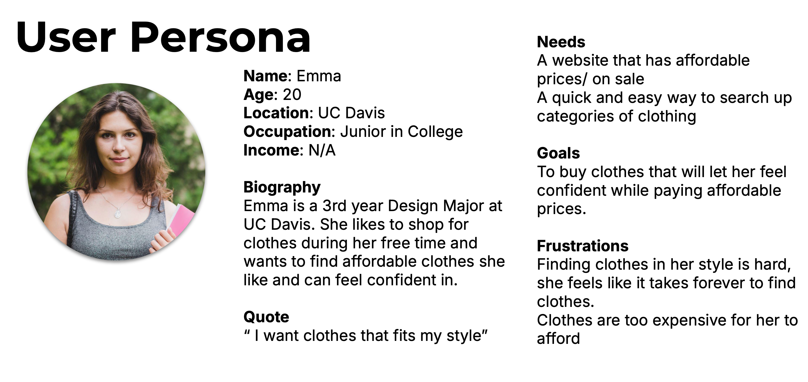
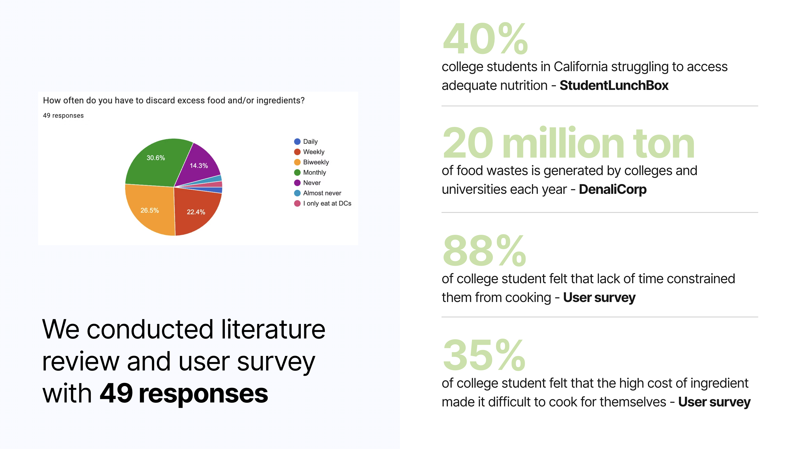
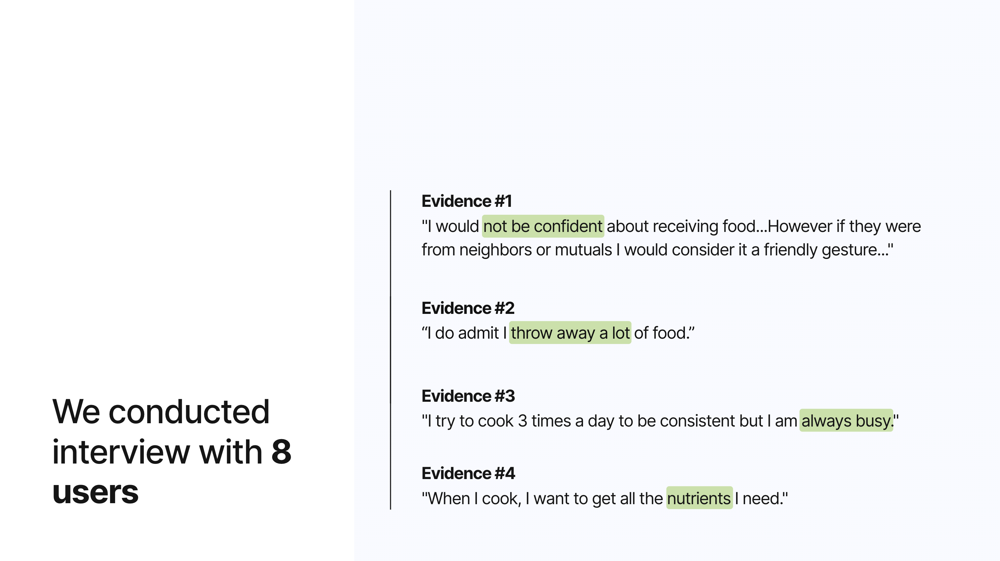
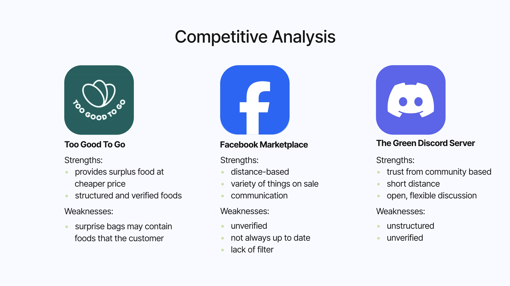
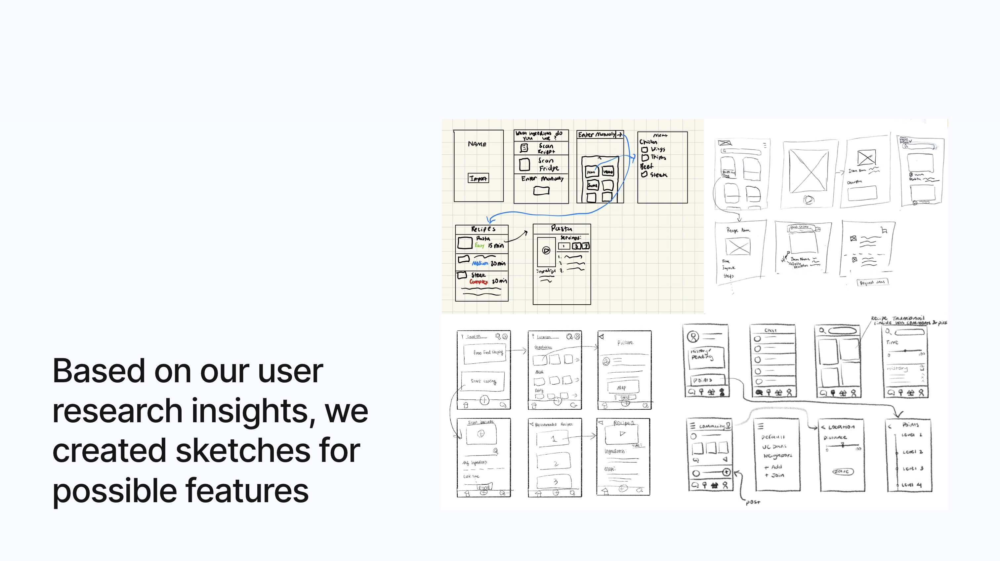
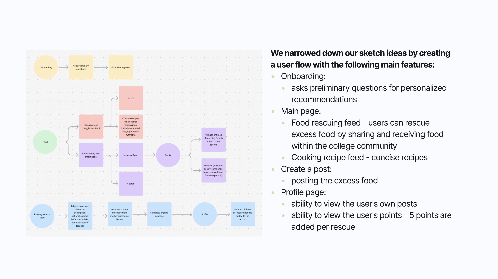

RePlate
RePlate is an app designed to connect food donors with recipients in need, reducing food waste and addressing food insecurity by creating a simple, community-driven platform for sharing surplus food.

What?
As a college student, it is hard to manage cooking, eating, and food waste.
Why??
- Busy schedule
- Financial Reasons
- Knowledge of cooking
How might we
How might we help college students cook more efficiently, minimize food waste, and reduce food insecurity?
User Persona

User Survey

Interview

Competitive Analysis

Ideation & Low-Fidelity


Wire Fidelity & Usability Testing
Onboarding
Asks preliminary questions for personalized recommendations.
Usability Feedback:
- Add storytelling for the dietary page so that the user knows what the purpose is.
Leaderboard
Tracks and ranks users based on the points they earn by sharing or receiving food.
Usability Feedback:
- Mentor mentioned that "make receiving free food a fun, engaging, and rewarding experience by removing barriers, adding incentives, and making the process feel effortless and social."
Profile Page
- Viewing user's own profile: ability to toggle between viewing posts and food rescue points.
- Viewing someone else's profile: with an addition of seeing mutual friends to build trust.
Usability Feedback:
- Add padding to the toggle or redesign it to match the rest of the clean visuals.
Create a Post + Messages
- Create a post: for excess food by uploading images, typing in the food name, description, date, and location.
- Messages: a way for communication and send request for rescuing food.
Usability Feedback:
- The posts would be hard to filter because it would be hard for the backend to code since it is relying on the user provided description to search the food.
- Would be easier to use API to access food data.
Feed
- Food Rescue Page: View posts from users about excess foods.
- Ability to click into a food item and send a request for the item.
- Cooking Recipes Page: View recipe thumbnails (sourced from external websites).
- Ability to click into each recipe and view a concise version of the recipe with ingredients, simple steps, nutrients, and ratings.
Usability Feedback:
- Many users mentioned that the two topics of improving cooking and food rescuing are too distinct.
- Would be polished to focus on one aspect.
- Helping with food insecurity while minimizing food waste is strong and beneficial to the community.
Browse & Request
The browse screen shows a map with pins for available food items nearby. Tapping a pin reveals a card with photo, distance, and estimated freshness. Users can request directly from the card.
Usability Feedback:
- Map pins needed clearer category icons (cooked vs. packaged).
- Users wanted a list view alternative to the map.
Donate Food
Donors post a listing in three steps: snap a photo, describe the item and quantity, then set a pickup window. The simplified flow tested well — average completion time was 45 seconds.
Usability Feedback:
- Users wanted to duplicate a previous listing for recurring donations.
- Expiry time field caused confusion — changed to a dropdown with presets.
Notifications & Messages
Push notifications alert recipients when food they may like becomes available nearby. In-app messaging lets donors and recipients coordinate pickup details without sharing personal contact info.
Usability Feedback:
- Users wanted granular notification controls (radius, food type).
- Message thread needed a "food claimed" status banner.
Profile
User profiles display donation history, ratings, and a trust badge system. Recipients can view a donor's track record before accepting food, increasing platform-wide confidence.
Usability Feedback:
- Rating system needed clearer explanation of the criteria.
- Users wanted to see total food weight donated as a personal impact stat.
High-Fidelity
After incorporating usability testing feedback, we produced a high-fidelity prototype in Figma. The final design uses a warm, approachable color palette with green as the primary accent, emphasizing freshness and sustainability.
Find a Food Donor
The home screen presents a live map of nearby food listings. Users can filter by food type, distance, and dietary needs. Each listing shows a photo, distance, and time until expiry.
Receive a Donation
Tapping a food listing opens the detail view: photo gallery, ingredient list, quantity, pickup instructions, and donor rating. One tap sends a request; the donor receives a notification instantly.
RePlate — Donate
Donors post surplus food in under a minute using the guided listing flow. Smart suggestions help fill in common food names based on photo recognition, reducing friction for first-time donors.
Create a Profile
User profiles show impact stats (total donations, meals provided), a trust badge, and reviews. Verified badges are awarded after identity confirmation to build community trust.
Challenges
Narrowing down our scope
At the beginning of the project, we explored multiple directions, including food rescuing, cooking education, and nutritional awareness. However, trying to tackle too many goals diluted the core value of the product. It was challenging to decide which path to prioritize, especially when each topic seemed equally important to our users. After synthesizing user research, we ultimately decided to focus on food sharing and food insecurity as our primary problem space.
Iterating from a combined topic to a focus topic
Our early prototypes attempted to integrate recipe recommendations with food rescue features. However, during usability testing, we discovered that users found these two experiences disconnected and overwhelming. Through several rounds of iteration and feedback, we pivoted to simplify and unify the user journey, removing unrelated features and emphasizing a streamlined, community-centered food exchange experience.
Key Takeaways
Flexibility is key — don't get attached to your first idea
In the early stages, we were excited about combining cooking education with food sharing, but through user feedback, we learned that a clear and focused experience was more effective. Being open to change allowed us to iterate confidently and shape a solution that truly met user needs. The project reinforced the importance of adapting based on insights, not assumptions.
Let data guide your design decisions
Quantitative data from surveys and qualitative insights from interviews and usability testing were crucial in validating our direction. Metrics such as "88% of students feel too busy to cook" and feedback like "the app should feel more social and fun" helped us prioritize features and refine user flows. This process highlighted how user-centered evidence builds better, more relevant designs.
Next Steps
- Collaborating with restaurants to give our excess food and incorporating it into the point system as rewards.
- Create a mascot to make the user experience more engaging and friendly.